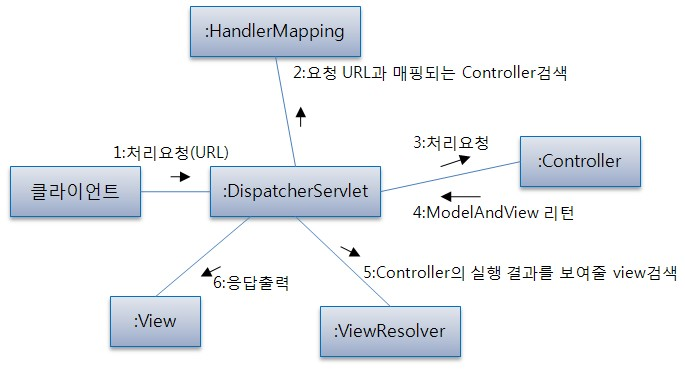
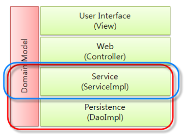

2. Spring Web MVC¶
Servlet API 위에서 동작하는 웹 프레임워크이다.
다른 프레임워크와 비슷하게 front controller 패턴을 사용하여 DispatcherServlet에서 요청을 처리하고 실제 작업을 다른 컴포넌트에 위임되는 방식으로 동작한다.
Service에 request 객체를 전달하면 안된다. 전달하면 패턴이 깨지게 된다. 전달할 경우 테스트하기 어려워 진다.
2.1. DispatcherServlet¶
프레임워크의 DispatcherServlet은 Servlet 스펙에 따라 생성되어야 한다.
Servlet이 초기화된 이후 WebApplicationContext가 생성되길 기대하며 RequestContextUtils을 통해 인스턴스를 참조할 수 있다. 반대로 WebApplicationContext에서도 Servlet 또는 ServletContext를 참조할 수 있다.
Servlet만 이용하여 웹 애플리케이션을 작성할 수 있다. 링크
파라미터 목록
- contextClass: WebApplicationContext 구현 클래스
- contextConfigLocation: WebApplicationContext에 전달될 설정 파일의 위치 (컴마로 구분됨)
- namespace
2.1.1. 요청 처리 순서(Processsing Sequence)¶
- WebApplicationContext를 찾는다. 그리고 실제 ServletRequest의 속성으로 WebApplicationContext를 바운딩 시킨다. 컨트롤러나 다른 요소가 이를 사용한다고 한다.
- 1)과 같은 방식으로 LocaleResolver, ThemeResolver를 바운딩 시킨다.
- MultipartResolver를 명시했다면 HttpServletRequest는 MultipartHttpServletRequest 타입으로 변환될 것이다.
- HandlerMapping의 목록에서 적절한 HandlerMapping을 찾은 뒤 핸들러의 HandlerExecutionChain(Object(핸들러), HandlerInterceptor)을 반환한다.
- preprocessors(applyPreHandle로 호출)
- controllers(핸들러와 연관된 HandlerAdapter를 이용해 핸들러를 요청에 적용, handle로 호출)
- postprocessors(applyPostHandle로 호출)
이 과정에서 모델과 렌더링을 준비한다. 또는 뷰를 반환하지않고 응답을 반환할 수 있다.
- 모델이 반환된다면, 뷰가 렌더링될 것이다. 모델을 반환하지 않는다면 뷰가 렌더링 되지않는다. 이미 요청은 처리되었기 때문이다. 여러가지 이유로 preprocessors(HandlerInterceptor)에 의해 처리가 완료될 수 있다.
요청 처리 중 예외가 발생하였을때는 HandlerExceptionResolver 객체가 처리한다.
2.1.2. 설정¶
Servlet 스펙에 따라 DispatcherServlet을 설정 할 수 있다.
아래 두가지의 인터페이스가 사용될 수 있다.
- WebApplicationInitializer
- AbstractAnnotationConfigDispatcherServletInitializer
web.xml을 이용한 설정은 다음과 같다. 아래 설정은 Root WebApplicationContext와 Servlet WebApplicationContext를 생성한다.
<?xml version="1.0" encoding="UTF-8"?>
<web-app version="2.5" xmlns="http://java.sun.com/xml/ns/javaee"
xmlns:xsi="http://www.w3.org/2001/XMLSchema-instance"
xsi:schemaLocation="http://java.sun.com/xml/ns/javaee http://java.sun.com/xml/ns/javaee/web-app_2_5.xsd">
<!-- The definition of the Root Spring Container shared by all Servlets and Filters -->
<context-param>
<param-name>contextConfigLocation</param-name>
<param-value>/WEB-INF/spring/root-context.xml</param-value>
</context-param>
<!-- Creates the Spring Container shared by all Servlets and Filters -->
<listener>
<listener-class>org.springframework.web.context.ContextLoaderListener</listener-class>
</listener>
<!-- Processes application requests -->
<servlet>
<servlet-name>appServlet</servlet-name>
<servlet-class>org.springframework.web.servlet.DispatcherServlet</servlet-class>
<init-param>
<param-name>contextConfigLocation</param-name>
<param-value>/WEB-INF/spring/appServlet/servlet-context.xml</param-value>
</init-param>
<load-on-startup>1</load-on-startup>
</servlet>
<servlet-mapping>
<servlet-name>appServlet</servlet-name>
<url-pattern>/</url-pattern>
</servlet-mapping>
</web-app>
URL이 / 로 요청이 들어오면 DispatcherServlet이 실행된다. servlet-context.xml 을 블록잡고 command + shift + R (맥 - 이클립스) 을 누르면 해당파일을 열 수 있다.
servlet_context.xml:
<?xml version="1.0" encoding="UTF-8"?>
<beans:beans xmlns="http://www.springframework.org/schema/mvc"
xmlns:xsi="http://www.w3.org/2001/XMLSchema-instance"
xmlns:beans="http://www.springframework.org/schema/beans"
xmlns:context="http://www.springframework.org/schema/context"
xsi:schemaLocation="http://www.springframework.org/schema/mvc http://www.springframework.org/schema/mvc/spring-mvc.xsd
http://www.springframework.org/schema/beans http://www.springframework.org/schema/beans/spring-beans.xsd
http://www.springframework.org/schema/context http://www.springframework.org/schema/context/spring-context.xsd">
<!-- DispatcherServlet Context: defines this servlet's request-processing infrastructure -->
<!-- Enables the Spring MVC @Controller programming model -->
<annotation-driven />
<!-- Handles HTTP GET requests for /resources/** by efficiently serving up static resources in the ${webappRoot}/resources directory -->
<resources mapping="/resources/**" location="/resources/" />
<!-- Resolves views selected for rendering by @Controllers to .jsp resources in the /WEB-INF/views directory -->
<beans:bean class="org.springframework.web.servlet.view.InternalResourceViewResolver">
<beans:property name="prefix" value="/WEB-INF/views/" />
<beans:property name="suffix" value=".jsp" />
</beans:bean>
<context:component-scan base-package="com.chang.spring" />
</beans:beans>
<context:component-scan base-package=》com.chang.spring》 /> 은 com.chang.spring 하부의 파일들은 xml로 따로 등록하지 않아도 빈을 등록해주겠다는 의미 이다. InternalResourceViewResolver 은 JSP를 찾아주는 역할을 한다. ViewResolver 이라 한다.
2.2. WebApplicationContext¶
WebApplicationContext는 인프라 구성을 위한 몇몇 빈을 가지고 있다. Context가 여러개의 Servlet에서 공유된다면 이러한 빈들 역시 공유될 수 있다. 물론 오버라이드될 수 있다. (예를들면 Repository 또는 Service)
기본적으로 Root WebApplicationContext가 생성되고 Servlet WebApplicationContext을 자식으로 생성할 수 있다.
2.3. Special Beans¶
DispatcherServlet은 요청을 처리하고 적절하게 응답하는 것을 특별한 객체(Special Beans)에 위임한다. 이 객체는 Spring 에 의해 관리되며 프레임워크의 인터페이스(계약, Contracts) 구현체이다. Spring Web MVC는 많은 기본 구현체와 함께 인터페이스를 제공한다.
인터페이스 목록 (계약, Contracts)
- HandlerMapping
- HandlerAdapter
- ViewResolver
- MultipartResolver
2.4. Annotated Controller(주석이 달린 컨트롤러)¶
Spring Web MVC는 주석 기반의 프로그래밍 모델을 허용한다. Annotated Controller는 상속을 사용하지 않고, 다양한 시그니처를 갖는 메서드를 포함하며, 주석을 통해 요청 매핑, 요청 입력(Input)을 다룰 수 있는 컴포넌트이다.
2.4.1. @Controller stereotype¶
스테레오타입(stereotype)은 Spring MVC에서 상투적으로 사용되는 주석(Annotation)을 뜻한다. @Controller 주석이 달린 클래스는 자동으로 탐지되서 컨테이너에 등록되며 웹 컴포넌트 역할을 갖는다.
@RestController주석의 경우 @Controller와 @ResponseBody 주석을 섞어 놓은 것으로, 모든 메서드가 @ResponseBody 주석을 상속받는다. 메서드에서 응답 몸체를 직접 반환하며 모델-뷰 렌더링과 비교된다.
2.4.2. @RequestMapping¶
요청과 컨트롤러 메서드를 연결하는데 사용되는 주석이다. 주로 메서드에 사용되어 요청과 연결되며, 메서드간 공유되는 매핑이 있을때 클래스에 사용되기도 한다.
인자로 사용 가능한 타입은 다음과 같다.
반환 타입은 다음과 같다.
패턴 종류 - ?: 하나의 문자와 매칭 - : 하나의 경로 세그먼트에서 0개 이상의 문자와 매칭 - *: 여러개의 경로 세그먼트에서 0개 이상의 문자와 매칭
method 파라미터 - @RequestMapping(method=HttpMethod.GET)와 같이 사용
path 파라미터 - 《/pets》 와 같은 문자열이 온다.
consumes 파라미터 - 《application/json》 와 같은 미디어 타입(Http 요청의 Content-Type)이 온다. - 《!application/json》 부정 표현식 가능
produces 파라미터 - application/json;charset=UTF-8 (Http 요청의 Accept)
params 파라미터 - myParam 존재 검사 또는 myParam=myValue 검사
headers 파라미터 - params와 유사
2.4.3. 메서드 파라미터에 사용되는 주석¶
요청의 어떤 부분과 메서드 파라미터를 연결시킬때 사용한다. Java 8부터 java.util.Optional<A>을 파라미터 타입으로 쓸 수 있다.
2.4.3.1. @PathVariable¶
URL 변수와 메서드 파라미터를 바인딩할때 사용하는 주석이다.
@GetMapping(《/owners/{ownerId:[a-z-]+}/pets/{petId}》) 와 같이 URL에 변수(URL variables)가 있을 경우 @PathVariable 주석이 달린 파라미터에 값이 담기게 된다.
2.4.3.2. @RequestParam¶
요청 파라미터를 메서드 파라미터에 바인딩 시킬때 사용하는 주석이다.
@RequestParam(name=》pid》, required=false) int pid 와 같은 형태로 사용되며, String타입이 아닐경우 자동으로 타입을 변환해준다. MultiValueMap<String, String> 이나 Map<String,String> 이 타입으로 사용될 경우 모든 요청 파라미터가 바인딩된다.
2.4.3.3. @RequestBody¶
요청 바디를 메서드 파라미터에 바인딩 시킬때 사용하는 주석이다. 메서드 파라미터에 사용되며 HttpMessageConverter에 의해 요청 바디가 메서드 파라미터로 변환된다. RequestMappingHandlerAdapter는 @RequestBody 주석을 지원한다.
2.4.3.4. @ResponseBody¶
반환 값을 응답 몸체와 바인딩할때 사용하는 주석이다.
2.4.3.5. HttpEntity<T>¶
@RequestBody, @ResponseBody와 유사하다. 몸체에 접근할 수 있을 뿐만 아니라, 헤더에 접근할 수 있다. 주석없이 요청, 응답에 사용할 수 있으며 응답 시에는 ResponseEntity<T>라는 서브클래스가 사용된다. 다른 주석처럼 HttpMessageConverter를 사용해서 몸체와 객체를 변환한다.
예시는 다음 링크에 있다.
2.4.3.6. @ModelAttribute (메서드)¶
메서드 주석으로 사용할 수 있으며, 같은 Controller안의 @RequestMapping이 호출되기 전에 1개 이상의 속성을 Model에 추가할 때 사용된다. 주로 자주 사용하는 속성을 모델에 저장할때 많이 사용된다. @ModelAttribute 주석이 달린 메서드는 @RequestMapping이 호출되기 전에 모두 호출된다.
아래 예시와 가지 2가지 스타일을 사용할 수 있다
예시1:
@ModelAttribute
public Account addAccount(@RequestParam String number) {
return accountManager.findAccount(number);
}
위 메서드는 반환 값을 값으로 갖고 암묵적으로 account라는 이름(타입)을 갖는 속성을 모델에 추가한다. @ModelAttribute의 인자를 주어 이름을 지정할 수 있다.
예시2:
@ModelAttribute
public void populateModel(@RequestParam String number, Model model) {
model.addAttribute(accountManager.findAccount(number));
// add more ...
}
Model을 인자로 받아서 여러개의 속성을 추가할떄 사용한다.
2.4.3.7. @ModelAttribute (메서드 인자)¶
모델의 속성과 메서드 인자를 바인딩 시킬때 사용할 수 있다.
예시:
@PostMapping("/owners/{ownerId}/pets/{petId}/edit")
public String processSubmit(@ModelAttribute Pet pet) { }
위 Pet의 인스턴스는 여러가지 위치에 있는 값과 바인딩 될 수 있다.
- @SessionAttribute로 인해 생성된 값 (여러 요청사이에서 유지됨)
- 메서드에 사용된 @ModelAttribute로 인해 생성된 값
- URI 변수 또는 요청 파라미터와 타입 컨버터로 인해 생성된 값 (@ModelAttibute(《need》) 문자열 인자가 필요함, URL 변수 또는 파라미터를 미리 등록된 Converter<String,B>를 사용하여 타입 B로 변환됨)
- 디폴트 생성자로 생성한 객체
@ModelAttribute뒤에 BindingResult 타입을 사용해서 ModelAttibute 변환 결과를 알 수 있다.
2.4.3.8. @SessionAttributes (클래스)¶
세션에 특성을 저장하도록 해주는 주석이다. 인자로 저장된 특성의 타입이나 이름이 온다. @ModelAttribute로 만든 특성을 그대로 세션에 저장하는 개념이다.
2.4.3.9. @SessionAttributes (메서드 인자)¶
이미 저장된 세션 특성을 메서드 인자에 바인딩 시킬때 사용한다. 주로 필터에 의해 추가된 값이다.
2.4.3.10. @RequestAttribute (메서드 인자)¶
요청 속성을 메서드 인자에 바인딩 시킬때 사용한다. 주로 필터나 인터셉터에 의해 추가된 값이다.
2.4.3.11. @CookieValue¶
쿠키를 메서드 파라미터에 바인딩 시킬때 사용한다. @CookieValue(《JSESSIONID》) 와 같이 사용된다.
2.4.3.12. @RequestHeader¶
헤더를 메서드 파라미터에 바인딩 시킬때 사용한다. @RequestHeader(《Keep-Alive》) 와 같이 사용된다. Map<String,String>, MultiValueMap<String, String>, HttpHeaders 타입을 사용하면 모든 헤더가 바인딩 된다.
2.4.3.13. 비동기 요청 처리(Asynchronous Request Processing)¶
Spring Web MVC 3.2 부터는 Servlet 3 기반의 비동기 요청 처리를 지원하며 Callable<T>를 반환할 수 있다. TaskExecutor 의 도움으로 다른 스레드에서 실행된다. Servlet Container Thread는 종료되고 반환되어 다시 다른 요청을 처리하게 된다.
DeferredResult<T>를 반환할 수도 있다. 요청에 대한 처리는 다른 스레드에서 처리될 수 있다. 심지어 Spring Web MVC에서 관리되지 않는 스레드에서 처리할 수도 있다. 예를들면 JMS 메세지나 예약된 작업과 같은 외부 이벤트에 대한 결과가 반환될 수 있다.
2.4.5. @RestController stereotype¶
@ResponseBody와 @Controller을 섞은 주석이다. Spring Web MVC를 이용해 Rest API를 만들때 사용한다.
2.4.6. 설정¶
JavaConfig를 사용할 경우 @ComponentScan 주석을 이용해 탐지할 패키지를 지정할 수 있다.
servlet_context.xml 설정을 다음과 같다.:
<?xml version="1.0" encoding="UTF-8"?>
<beans xmlns="http://www.springframework.org/schema/beans"
xmlns:xsi="http://www.w3.org/2001/XMLSchema-instance"
xmlns:p="http://www.springframework.org/schema/p"
xmlns:context="http://www.springframework.org/schema/context"
xsi:schemaLocation="
http://www.springframework.org/schema/beans
http://www.springframework.org/schema/beans/spring-beans.xsd
http://www.springframework.org/schema/context
http://www.springframework.org/schema/context/spring-context.xsd">
<context:component-scan base-package="org.example.web"/>
<!-- ... -->
</beans>
2.5. HandlerMapping¶
사용자의 요청을 적절한 핸들러와 매핑시켜주는 인터페이스를 뜻한다.
@Controller와 @ReuqestMapping 주석이 등장하면서 RequestMappingHandlerMapping 객체가 자동으로 @ReuqestMapping 주석이 달린 메서드를 찾아서 핸들러로 사용한다. RequestMappingHandlerMapping 객체는 interceptors 속성을 포함할 수 있다.
2.5.1. HandlerInterceptor¶
특정 요청에 부가적인 기능을 추가할때 사용하는 인터페이스이다. 아래와 같은 3가지 메서드를 사용해 부가적인 처리할 수 있다.
- preHandle(…) : 핸들러 실행 전 호출 (특별히 boolean 타입을 반환할 수 있으며 false인 경우 처리를 끝낸다.)
- postHandle(…) : 핸들러 실행 후 호출
- afterCompletion(…) : 요청을 완전히 처리한 뒤 호출
2.5.1.1. postHandle과 @ResponseBody 그리고 ResponseEntity¶
@ReponseBody또는 ResponseEntity 특성 상 postHandle() 메서드와 잘 어울릴 수 없다. 바로 응답을 기록하기 때문에 postHandle()에서 응답을 변경(헤더를 추가하는 작업 등)하는 것은 불가능하다. 대신에 ResponseBodyAdvice를 구현하고 @ControllerAdvice을 선언하는 것은 가능하다.
2.6. ViewResolver¶
JSP와 같은 뷰 기술을 다루며, 뷰 이름과 뷰를 연결해주는 인터페이스이다. 보통 핸들러에서 논리적인 뷰 이름을 반환한 뒤 ViewResolver가 실제 View와 연결시켜준다.
UrlBasedViewResolver는 간단한 ViewResolver로 논리적인 뷰 이름으로 저장된 리소스를 찾을때 사용한다.